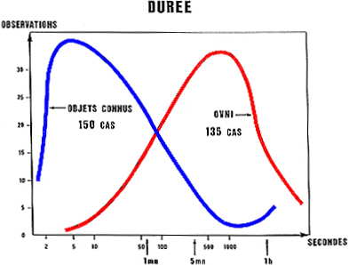

Il n'existe de connaissance scientifique que statistiqueMichel, Aimé: Préface du Collège
Invisible de Jacques Vallée, p. 16
Un événement rare implique toujours au début une question sur la réalité de l'observation
qualitative. Par la suite, une enquête scientifique, combinant généralement statistiques et physique, résoud la question d'une manière ou
d'une autre Kuettner, Joachim P.UFO
- An Apraisal of the Problem, Astronautics and Aeronautics, journal de l'AIAA, novembre 1970
Une personne avec si peu de compréhension des statistiques et des probabilités pour penser qu'une personne peut
avoir des douzaines d'observations d'ovnis alors qu'un grand nombre d'autres gens (en fait, la majorité) n'ont jamais
dans leurs vies vu quoi que ce soit ressemblant à un ovni, peut être identifié d'un coup comme absolument pas fiable
Hynek, J.
A.: "The UFO Gap", Playboy n° 12, vol. 14, décembre 1967, p. 270
Est-il possible d'en apprendre plus sur les ovnis à l'aide de l'outil statistique ? Et si oui, quels sont les résultats ?
Résultats récurrents
Entre 5 et 10 % des signalements "non-identifiés"
se produisent plutôt en soirée (entre ) et un peu avant le lever du soleil
disposent d'une "crédibilité" et d'une "étrangeté" conséquente pour une partie d'entre eux seulement
Les différences de caractéristiques entre OVIs et OVNIs restent à établir
la proportion de signalements d'ovnis varie régulièrement selon les saisons (on en observe plus l'été, moins en
hiver) Hynek, J. A. "The UFO Report", 1977, p. 307"How to monitor UFO
waves?", CISU, novembre 2005.
Une majorité d'observations n'est pas rapportée (le nombre des observations rapportées est réputé
faible par rapport au total réel d'observations inexpliquées)
Le phénomène est très diversifié/hétéroclite, même s'il présente certaines similitudes.
Les données sont peu fiables, issues de sources aux qualités hétérogènes, et potentiellement
déformées par divers biais (méthodes d'enquêtes, traductions, écrit/oral, etc.) et donc les conclusions
contestables.
Cela n'a cependant pas empêché nombre d'études d'être réalisées, sur des rapports d'observations
comme sur des sondages d'opinion.
Blue Book
GOC
Statistiques de l'ATIC fournies au GOC
A partir de , avec le démarrage de l'"Opération Skywatch" apparaît une nouvelle catégorie de
témoin d'ovni : l'observateurs du GOC. En janvier
1953, ce dernier publie dans son journal officiel "'Unidentified
Aerial Objects' Receive Careful Analysis by Air Force Experts", The Aircraft Flash, vol. 1, n° 4, janvier 1953
la décomposition en pourcentage de l'ensemble des rapport est jusqu'à présent ci-contre (qualifiés de "possibles
et probables" pour les catégories d'identifiés).
Statistiques de l'ATIC pour les catégories d'observateur, telles que fournies au GOC
Les sources de ces signalements sont categorisées dans les groupes ci-contre.
Bear/Stork/Battelle/Rapport Spécial n° 14 du projet BlueBook
En commence le projet Bear, sous-projet du projet Stork d'étude des technologies étrangères. Menée par le
BMI, Bear est une étude statistique informatisée de près de 2199
rapports d'observation d'ovnis reçus par l'ATIC. Ce dernier la publie en
dans le cadre d'un "Rapport Spécial" n °14 ATIC/USAF: Project
Blue Book. Special Report n° 14: Analysis of Reports of Unidentified Aerial
Phenomena, Wright-Patterson Air Force Base, Ohio, projet n° 10 073, ATIC, 5 mai 1955. du projet Blue Book. Les conclusions de cette étude
statistique - probablement la plus grande officielle réalisée sur les ovnis - seront interprétées différemment, l'USAF déclarant dans la presse qu'il n'existe pas de preuve que des appareils
extraterrestres aient visité la terre et qu'avec plus d'information l'ensemble des observations pourraient être
expliquées, à la différence de l'avis de certains ufologuesFriedman, S.
T. & B. Ann Slate: "'Secret' Air Force Study Says UFOs
Are Real", Rapport ovni Saga, vol. 1, n° 5, printemps 1974, p. 28.Hynek 1977.
Condon
En revoyant les éléments accumulés du projet Blue Book, le
sous-comité ovni de l'AIAA trouve un ratio signal-pour-bruit excessif, comme
cela est illustré par les statistiques du projet citées dans l'étude de l'Université du Colorado, qui montre 3,3 %
des observations comme non-identifiées (253 cas/7741 disponibles à cette époque Les chiffres définitifs, seront de 701 sur 12618, soit 5,5 %).
Ces chiffres sont souvent contestés, mais son ordre de magnitude (5 %) semble être correct, si l'on prend en
compte tous les signalements disponibles. Le fait que l'étude Condon
elle-même arrive à un pourcentage bien plus grand de cas non-expliqués - c'est-à-dire, près de 30 % (35 cas/117) -
est principalement dû à la pré-sélection pour enquête de cas spécifiques. Les chiffres précis sont difficiles à
envisager, le rapport Condon ne se prêtant pas lui-même très bien à ce
type d'analyse, les mêmes cas étant souvent traités dans des sections différentes et selon différentes
identifications.
Joachim P. Kuettner, président le sous-comité sur les ovnis de l'AIAA, dira que : La question immédiate est comment s'attaquer au problème ovni
en évitant les pièges des tentatives précédentes. Il ne fait pas de doute qu'une approche en seul coup et sur une
courte durée par une équipe ad hoc n'est pas plus prometteuse qu'économique. Cela est particulièrement
vrai si l'équipe d'étude décide — comme le groupe de l'Université du Colorado le fit
— de se concentrer sur les observations actuelles plutôt que sur celles passées. Comme le montrent les
statistiques sur les ovnis, cela aboutit à dévouer un temps précieux à enquêter sur le bruit, plutôt que sur le
signal.
Dans son dernier chapitre, Hynek suggère un nouveau départ pour l'ensemble du
problème ovni. Il recommande une approche statistique afin de définir les paramètres du phénomène. Cela implique
un traitement informatisé des données et un accord international sur les formats et le codage. Il propose un
"institut" pour l'étude du phénomène ovni qui éliminerait l'approche actuelle strictement privée. Il servirait de
point focal national ou international pour la collecte des données et de rapports. Le périmètre d'un d'un institut
dépendrait des fonds et du temps disponible pour son équipe.
Vallée
En France, dès , Jacques Vallée commence à élaborer des statistiques
sur plus de 600 cas. Il trouve des éléments caractéristiques en terme d'heure et de durées d'observations d'ovnis,
avec un intervalle typique entre 2 et 45 mn.
Poher
De , Claude Poher, avec l'aide de 4 collaborateurs du GEPA, entame quelques travaux privés sur le sujet Poher, C.: Etudes
statistiques portant sur 1000 témoignages d'observations d'UFO, 1971. Publication privée complétée en 1976.Poher, C.: Statistiques
sur 735 témoignages d'observations d'ovnis sur près d'un millier de témoignages. Un traitement
informatique "clandestin" est organisé : un programme en ForTran est écrit, et
des cartes perforées soumises à des ordinateurs du CNES durant leurs heures creuses. Il
commence à les diffuser, discutant avec ses collègues pour ouvrir les esprits.
Sur la base d'un échantillon de 150 cas identifiés et 135 cas non identifiés, Poher répond aux questions suivantes :
Les témoignages sont-ils crédibles ?
Autrement dit, les témoins décrivent-ils vraiment ce qu'ils ont vu ?
Dans son étude, Poher démontre que les témoins ont observé respectant les lois de
l'optique. Donc pas ou quasiment pas de canulars ou hallucinations et autres problèmes psycho (hypothèses souvent
avancées).
Ces conclusions pourraient fort bien s'appliquer à n'importe quel phénomène banal,
mais ici les témoins n'ont pas décrit de phénomènes triviaux. Ils ont vu des choses qui leur ont semblé inhabituelles,
inconnues ou extraordinaires, et Poher montre qu'ils l'ont bien vu.
Ce qui est observé est-il réel ?
Dans Poher 1977, Poher relie le nombre d'observations avec la
distance de visibilité (une distance "potentielle" objective, issue des conditions météo) et non une distance estimée
par le témoin. Il trouve que, plus un grand nombre de gens se trouvent près du phénomène, plus le phénomène est
signalé par des témoins, comme cela se fait pour d'autres observations d'objets
physiques connu.
Cependant Poher ajoute que le résultat est insuffisamment probant car il est
extrêmement contraignant de devoir choisir seulement les rares observations pour lesquelles on connaît la distance de
visibilité (et donc des conditions météo relativement précises).
Ce qui est observé est-il vraiment inconnu ?
Autrement dit, les caractéristiques de ce qui est observé se recoupent-elles ou non avec celles de phénomènes connus
?
Dès on trouve des refutations de l'amalgame des phénomènes réellement non identifiés (non
assimilables à des causes connues) comme relevant simplement du manque d'information. Biraud et Ribes rappellent ces références :
Il serait malhonnête d'ignorer la minorité de cas inexpliqués : en effet, des études statistiques Powers, W.
T.: "The Case for 'Real' UFOs", Physics
Today, juin 1970, pp. 14-17 — Rejet de l'argument des non-identifiés comme "manque d'information"Friedman, S.
T.: "More on UFOs", Physics
Today, janvier 1971, pp. 97-99 — Prolongement de l'article de Powers rejettant l'argument des non-identifiés comme "manque d'information", avec référence à l'étude statistique du projet Bear
(Stork)montrent que ceux-ci restent
inexpliqués non pas parce que vagues ou douteux, mais au contraire parce que la précision et le sérieux des
observations excluent les explications traditionnellesBiraud et Ribes 1970, P. 186.
Comparatif de durée d'observation pour 150 OVIs, et 135 OVNIsPoher

Poher 1977 indique des différences statistiques de comportement du phénomène ovnis par
rapport à celui d'autres phénomènes (avions, météores, planètes, etc.) : les observations d'ovnis seraient, en moyenne, et majoritairement, de
durée "moyenne", alors que les phénomènes "connus" auraient — dans leur grande majorité — des durées
extrêmes, soit très courte (> ), soit très longues (< , comme pour un phénomène
astronomique par exemple). Double courbe en cloche de répartition des observations de phénomènes "inconnus" et
"connus". Ces conclusions seront remises en cause par Allan HendryHendry, A.: "Tools: statistics", The UFO
Handbook, Doubleday, New York, 1979 qui ne trouve pas les mêmes courbes mais surtout voyant dans
l'examen des durées — et même des heures — plus des caractéristiques des témoins que des phénomènes
observés, puis par Denis BreyssesPinvidic, Thierry: 1993
qui argue que les courbes OVNIs comme OVIs seraient en fait
relativement arbitraires.
Par la suite, du lors de la Convention Annuelle de l'AIAA sur les Sciences Aérospatiales, Poher et Vallée unissent leurs efforts pour sortir une publication sur les caractéristiques
fondamentales du phénomène ovni Poher, Claude & Vallée,
J. "Basic patterns in
UFO observations", 13ème Convention Annuelle de l'AIAA sur les Sciences Aérospatiales à Pasadena, Californie, 20-22 janvier 1975, qui représente le point d'orgue de l'approche
scientifique et statistique du phénomène ovni.
Armée de l'Air
En , le colonel Alexis, du Bureau
de Prospectives et Etudes de l'Etat-Major de l'Armée de l'Air qui centralise alors tous les rapports d’ovnis
initie les premières statistiques officielles sur le phénomène, et reconnaît à son tour l'existence d'un reliquat d’observations
inexplicables Alexis, G.: Armées
d'Aujourd'hui, avril 1976 < Alexis, G.: "A
propos d'un phénomène spatial non identifié dénommé 'OVNI'", Phénomènes
Spatiaux n° 48, juin 1976.
GEPAN
Au cours de sa 1ère année d'existence, le GEPAN réalise des travaux statistiques
sur plus de 300 rapports transmis par la Gendarmerie, et procède à une
vérification des études déjà conduites par Claude Poher à titre privé depuis
, ainsi que travaux d'autres ufologues.
Esterle
Classes A et B (résultats partiels) CNES/GEPAN 1979
En , Alain Esterle relance au GEPAN
des travaux statistiques élémentaires sur les rapports d'observation transmis par la gendarmerie. L'organisme effectue également des recherches dans le cadre des
statistiques différentielles (data mining), pour définir des caractéristiques typologiques du phénomène, la
définition des principes méthodologiques et à l'étude du rôle des mass-médias, ainsi que des expériences de propulsion
MHD et la psychologie des perception sensorielles.
En février le CNES publie Le GEPAN et l'étude
du phénomène OVNI, où apparaissent p. 11 les chiffres indiqués ci-contre, établis d'après 354 rapports
d'observation établis par la gendarmerie qui furent expertisés au GEPAN, et se
répartissant en 4 classes. On y trouve les pourcentages établis par un chercheur du CNES
sur 678 rapports de gendarmerie de .
Classement de ces 89 cas en "crédibilité relative" du témoin CNES/GEPAN 1979
Toujours en , L'Institut d'Etudes Cosmiques et l'Académie des Sciences de l'URSS publie une analyse
statistique des 256 observations de phénomènes atmosphériques anormaux dont 13 en vol et 1 en mer. Parmi ces
observations, 12 furent effectuée à moins de 100 m de distance, 1 au télescope, 2 au radar dont une couplée à
l'observation optique, le tout accompagné de 50 dessins et 3 photographies. Dans 64 % des cas, plusieurs témoins
étaient présents et 15 % sont des observations de masse. Enfin, 11 % de celles-ci sont le fait de stations
d'observation et 5 % de militaires en opérations. Toutes les catégories de témoins sont représentées dont 33 % de
scientifiques. On trouve parmi ceux-ci 10 astronomes, 6 météorologistes, 6 géophysiciens mais aussi 23 ingénieurs et
14 aviateurs. Dans ce sondage, les astronomes (7,5 %) voient 7500 fois plus d'ovnis que la population générale. Sur
les 256 cas, 194 ont été observés en . Toutes les formes classiques ont été vues, avec cependant une
prédominance des formes en croissant. Dans 94 cas, il y avait plus d'un objet, et dans la majorité ils étaient
silencieux. Dans 101 cas la luminosité était intense, voire aveuglante dans 9 cas. La couleur la plus fréquemment
observée est l'orange. La vitesse estimée va de 18 à 187000 km/h, à une altitude variant de 35 m à 100 km Guindilis & Menkov & Pétroskaïa: Observations de phénomènes atmosphériques anormaux en URSS < GEPAN, Note
d'information n° 1, 50, 2: 15 février 1980.
Répartition des 89 cas représentant les "non-identifiés" CNES/GEPAN 1979
Cette étude statistique russe met également en avant que le maximum de la répartition des durées d'observations est
obtenu entre 1 et 4 minutes, ainsi que la similitude de cette caractéristique pour différents pays (sous-tendant un
phénomène commun). Un aspect intéressant de l'étude porte même sur les durées en fonction des formes des objets.
Identifiés Probablement identifiés Inanalysables Reste non-identifiés
23 153 239 263
3,3 22 35 38
"Note technique N° 2 - Etude comparative des résultats
statistiques élémentaires relatifs aux observations de phénomènes aérospatiaux non identifiés", GEPAN, 21 avril 1980
"Note technique N° 4 - Recherche statistique d'une
typologie des descriptions de phénomènes aérospatiaux non identifiés", GEPAN, 25
mars 1981
"Note technique N° 13 - Recherche statistique d'une
typologie identifiée/non-identifiée", GEPAN, 26 novembre 1982
Julian, Paul: "Statistical Analysis", Scientific Study of
Unidentified Flying Objects, 1969 — Sur la pertinence de statistiques sur les observations d'ovnis
Merritt, Fred: "Statistical Notes on the UFO Phenomenon", Bulletin du CUFOS, hiver 1977